2024 Recap¶
Disclaimer: the content of this post is a reflection of my career journey and not specific to my work at JPMorganChase.
You can read my 2023 Recap here.
This Year’s Theme¶
While writing this recap, I found myself thinking the words, “I finally got organized and” a number of times. I felt a sense of cumulative momentum this year that came from building on prior knowledge and experience.
Work¶
I continued as a Python/Django software engineer doing task orchestration and distributed systems engineering.
January¶
Los Angeles 2023 Trip Recap¶
The dream Los Angeles trip that I took in early December 2023 turned into a dream recap filled with my favorite stories, photos, and videos.
My most-viewed Los Angeles videos:
Kinesis Advantage360¶
In 2020, I bought a Kinesis Freestyle Pro split keyboard. Although the keyboard itself was fairly traditional, I loved the 20’’ separation cord and tenting. The unique Kinesis Advantage2 keyboard had long piqued my curiosity as well. When Kinesis came out with the Advantage360 split version with tenting, I finally pulled the trigger.
This keyboard is the most comfortable that I have ever used. The contoured shape shortens reach and the thumb presses heavily-used keys, instead of the pinky.
Having said that, the layout is similar, but not exactly the same as a regular QWERTY, and I do not recommend using it if you have to “hunt and peck.” Also, like the Freestyle Pro, it is one-size fits all, and slightly larger for a woman’s smaller hands.
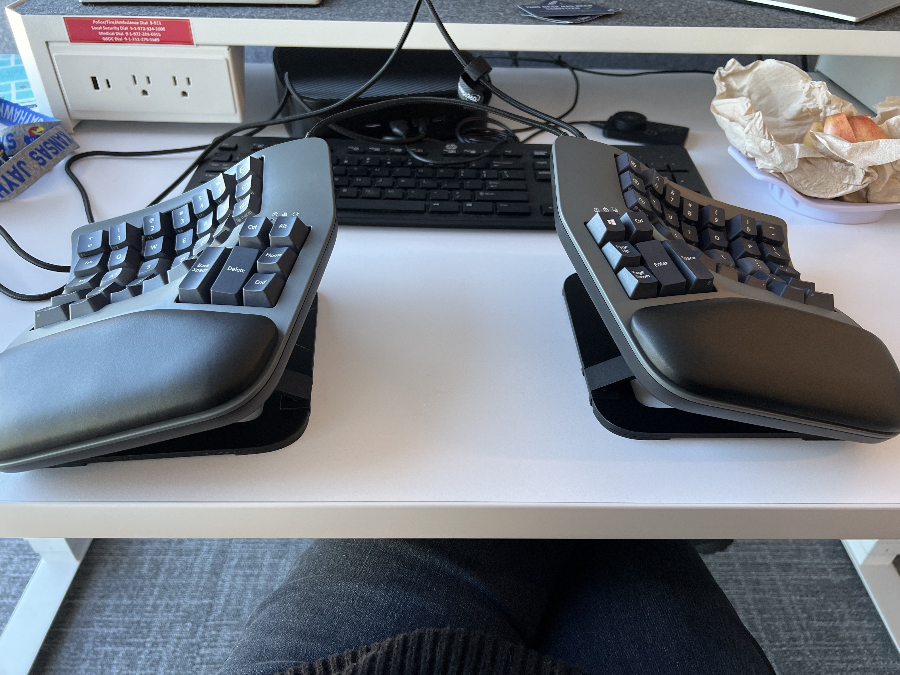
Kinesis Advantage360DjangoCon US 2023 Recap¶
I published a DjangoCon US Recap in October 2023. It was featured in Django News Newsletter. I learned in January that the recap had been Django News Newsletter’s top article for months.
February¶
Board Games for My Nieces¶
I want to start doing random, fun things for my nieces. I decided to buy them some board games.
Games purchased:
Guess Who?
Candy Land
Scrabble
Clue
I had countless hours of fun playing these when I was a kid.
We FaceTimed while they opened the box. They immediately began playing and loved them.
PS Connect¶
March¶
DjangoCon US Talk Topics Inspiration List¶
Every year, fellow DEFNA Board Member Jeff Triplett publishes a list of talk topics he’d like to learn more about at DjangoCon US. He also encourages other DEFNA Board Members to publish their own.
Last year, I finally got organized and created a Talk Topics Inspiration List for DjangoCon US 2023. This year, I created a Talk Topics List for DjangoCon US 2024.
Our talk submission stats since I began publishing my list:
2022: 152
2023: 189
2024: 194
Given the popularity of my articles among the Python/Django community, I’m confident that my list played a major role in the increase in submissions. I am really proud of that!
My list was featured in Django News Newsletter, along with Jeff’s list and DjangoCon US Program Chair Drew Winstel’s list.
DjangoCon US Website Design¶
As a DEFNA Board Member, I help oversee DjangoCon US, including the website design. I am also an avid photographer.
During DjangoCon US 2023, I walked around downtown Durham and took some photos of the quirky artwork there. During the always-fun website design iteration process, I shared these photos with the website team.
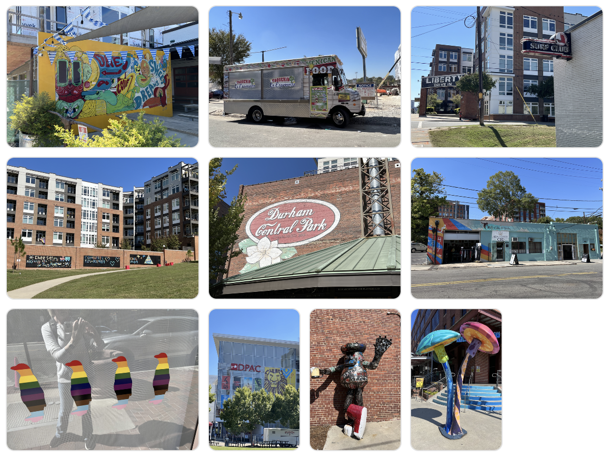
Snapshots I took in downtown DurhamI am super excited that my photos helped inspire this year’s theme. The website design makes me smile, and I hope it makes you smile too!
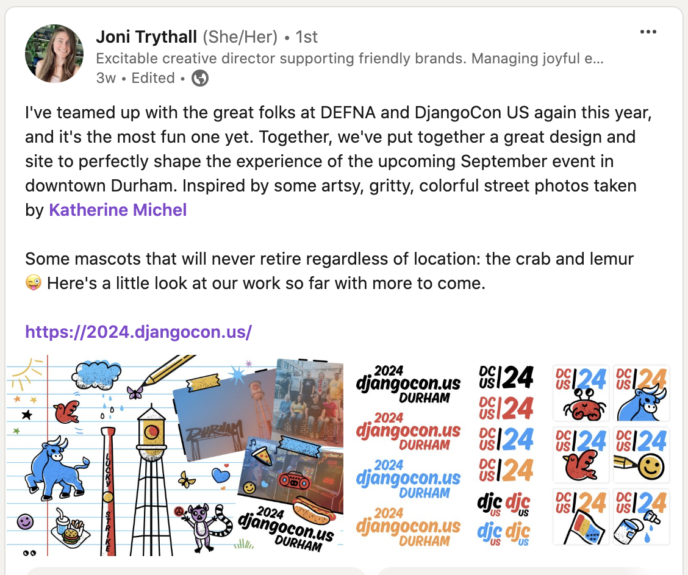
A shoutout from our amazing designer Joni Trythall of YupGup!Conference Snapshots¶
After years of collecting conference snapshots, I got organized and created a page of my Favorite Conference Snapshots and the stories behind them, as well as a page of Speaker, Board, and Organizer Photos.
Family Tragedy¶
On April 15, 2022, my Aunt Judy died of pancreatic cancer. On March 29 of this year, my Uncle Edward passed away too. He had been suffering from probable Lyme-disease induced dementia and took a fall, but ultimately, he died of a broken heart.
A part of me never believed this day could happen, and I wished it never would. Uncle Edward and Aunt Judy were truly larger than life.
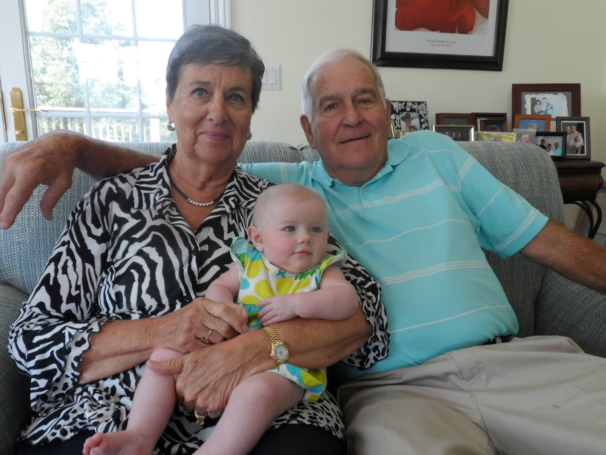
My aunt and uncle in better timesHis life was not so easy after Aunt Judy died. He missed his Judy. He died peacefully, and I am comforted by the fact that he had a smile on his face.
You can learn more about him in his obituary or the replay of his funeral.
He was one-of-a-kind. He was a brilliant engineer and businessman and the best brother my mother could have ever asked for.
My mom put her heart into providing the funeral music. He would have absolutely loved it.
My uncle was an avid hunter. My cousin Andrea Markel Hastings organized one last duck call for him at the cemetery by a few of his fellow hunting buddies.
There’s something in my eye.
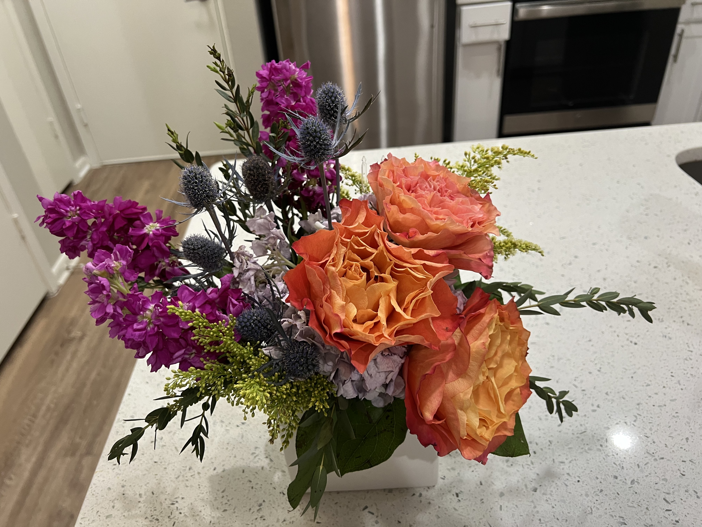
Beautiful sympathy flowers from DEFNA… in a strange coincidence, my cousin pointed out that the roses were one of my uncle’s favorite colorsApril¶
Lemurs at Tanganyka Wildlife Park¶
Because our DjangoCon US host city Durham, North Carolina has the largest population of lemurs outside of Madagascar, we featured a “friendly” lemur on our website last year.
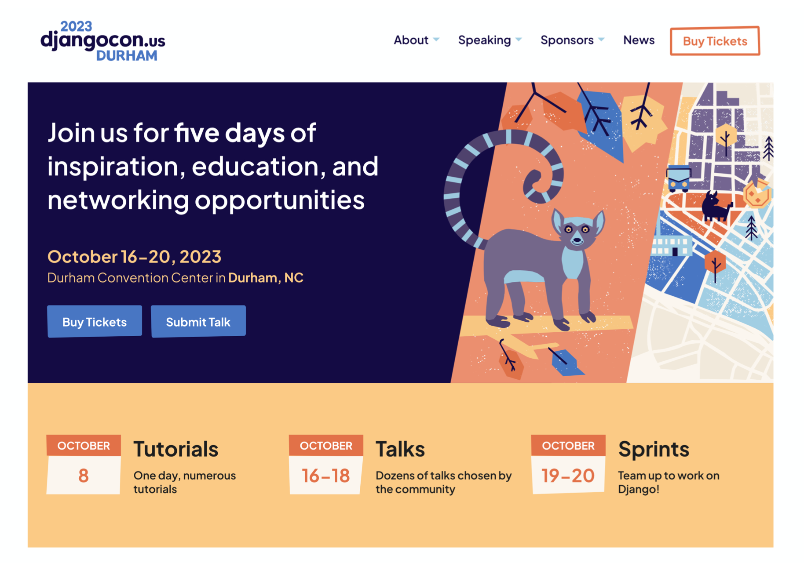
A “friendly” lemur with a smile on its faceAfter years of hearing about Tanganyika Wildlife Park in Goddard, Kansas, mom and I decided to go. I had no idea until I got there that you can feed lemurs. They were so soft and gentle. I loved spending time with these real-life, friendly lemurs!
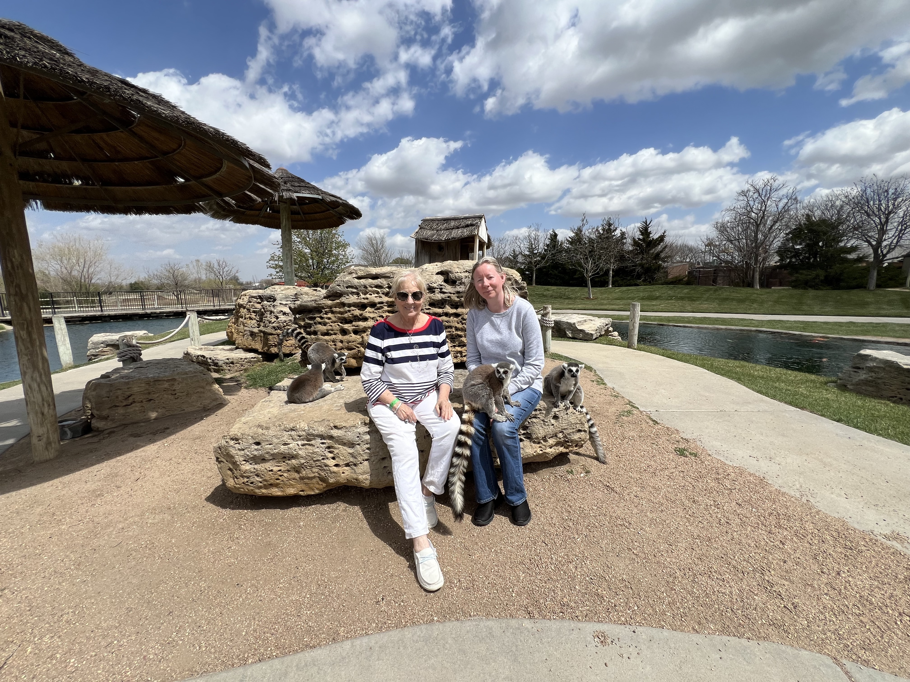
Mom, me, and the lemurs!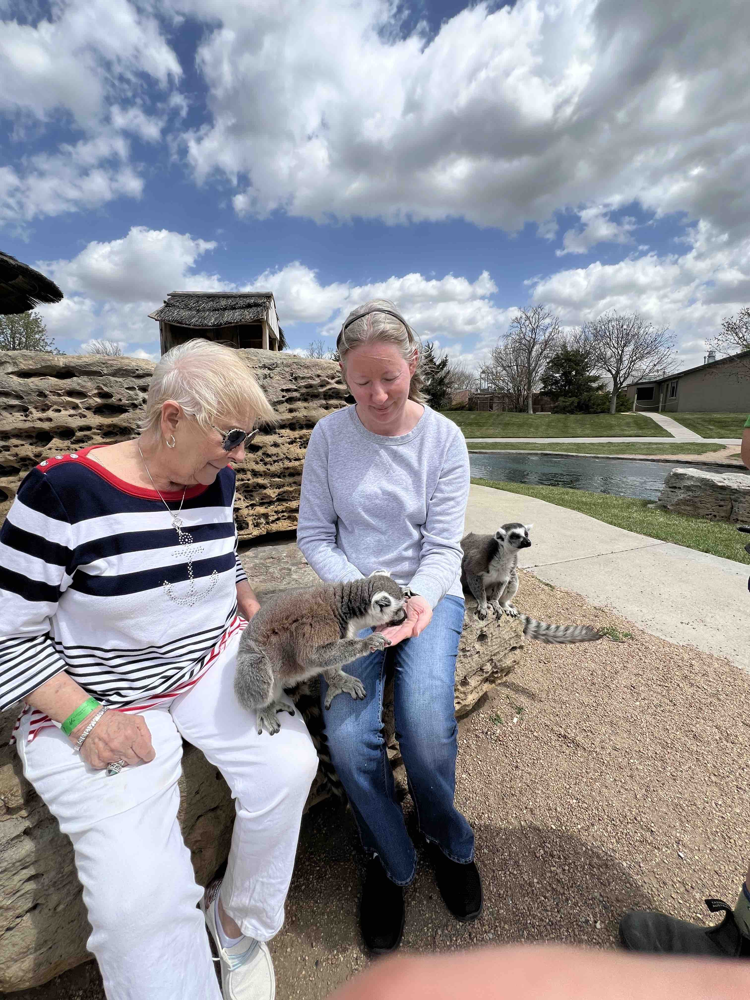
Me feeding a lemur a craisin out of my palm! It’s holding my hand.JPMorganChase Eclipse Watch Party¶
On my way back to Plano after my uncle’s funeral, I got stuck in eclipse travel. I arrived back in Plano in time for the eclipse, but hadn’t had time to plan. Fortunately, JPMorganChase had me covered. Eclipse glasses were handed out around campus, and we convened outside for a watch party. It’s hard to put into words what it was like to watch the eclipse with what must have been thousands of co-workers.
Here is a little taste of the fun. This was a small portion of the crowd. Clouds intermittently covered the sun, but parted in time for the totality. The crowd cheered and Total Eclipse of the Heart played in the background. Super fun!
PyTexas 2024¶
PyTexas 2024 took place in Austin, Texas from April 19-21.
I met Jason Koo at DjangoCon US 2022 in San Diego where he generously helped as an organizer. It was great to see him again, and I look forward to learning more about Neo4j Graph Database! On the bright, sunny, second day of PyTexas, he invited me to be in this photo.
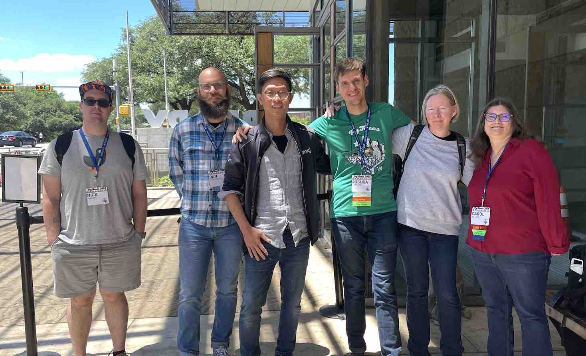
Nick, Dan, Jason, Josh, me, CarolIt was a pleasure to get a snapshot next to my incredible friend Carol Willing. She had given an amazing keynote that morning. It is a must watch! I was also standing next to Josh Cannon who read the very clever Oh the (Methods) You Can (Make) book by Dunder Seuss.
All of the videos are available on the PyTexas Youtube channel.
May¶
Gym¶
Last year, I’d never been in a gym before and was afraid to go. My friend DeAnna Troutman Anaya talked me into getting started.
A few years ago, she found out that she was on her way to having debilitating illness. She was able to avoid it by getting fit. She regularly lifts weights and has an impressive physique. She is redefining what it means to be a grandmother.
When I started using an elliptical, I limited myself to ~70 steps per minute. Otherwise, I would get winded. Now, I am regularly up to 120+ steps per minute, and when life gets busy, and I go for a few months without exercising properly, I am able to get back to my top performance within just a few sessions. I would love to know the science behind it.
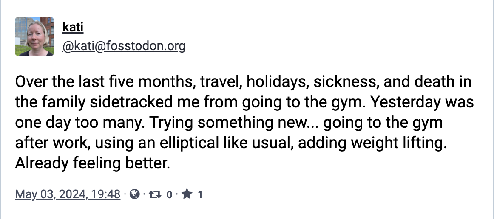
One day too manyAfter returning to the gym regularly on May 2nd, by June 1st, I’d already had a personal best on the elliptical and broke that record many times over throughout the year.
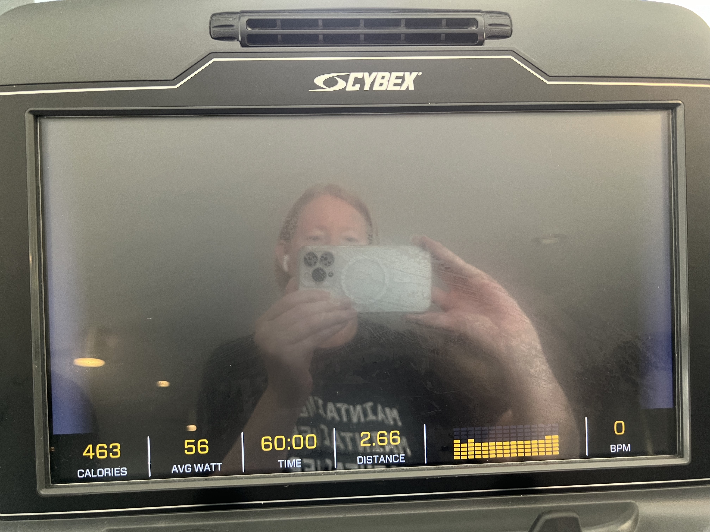
Personal best… 112 steps per minute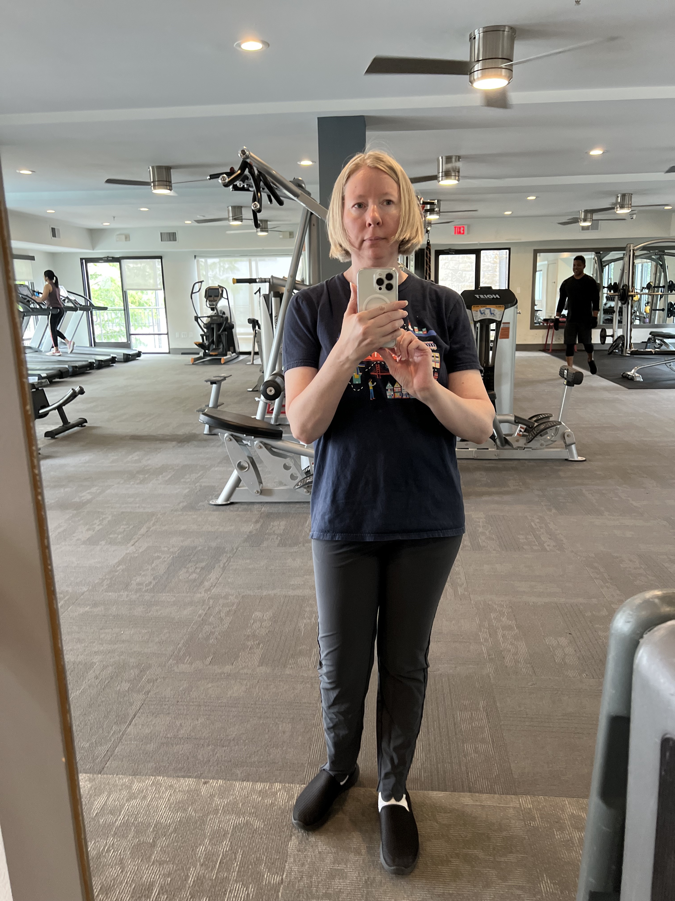
Gym rat :)A chef friend Sheldon also encouraged me to get a personal trainer, which I have not done (yet). It has been life-changing for him in his life and work.
DjangoCon US Featured Post¶
I was featured on DjangoCon US social media accounts, along with current Django Fellow Natalia Bidart and former and current DEFNA Board Members Drew Winstel, Tim Schilling, and Koji Idressa.
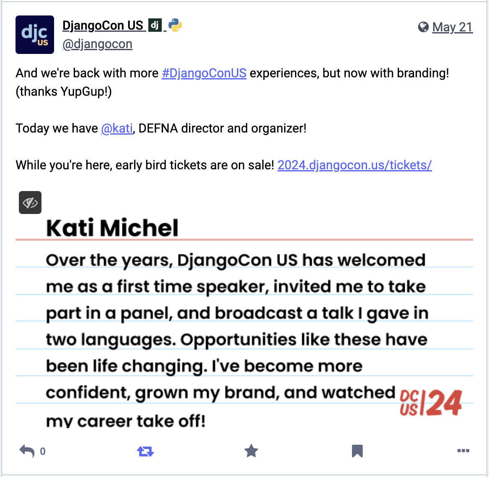
PyCon US 2024¶
PyCon US 2024 took place from May 15-23 in Pittsburgh, Pennsylvania.
Thank you to Bernat Gabor for encouraging me to go! It was extremely worth it.
After the conference, I did some “heavy lifting” from conference connections made. A few examples:
Based on a conversation with Black Python Devs Founder K. Jay Miller, I liased with DEFNA to further the interests of Black Python Devs at DjangoCon US 2024
Based on a conversation with PyTexas Chair Mason Egger, I made PyTexas sponsorship pitches to interested parties
Based on a conversation with Quansight Labs Co-director Tania Allard, I attempted to rekindle a prospective open source process within my network
June¶
PyCon US 2024 Recap¶
I wrote a deep dive of my PyCon US 2024 experience.
As my recap reflects, as far as talks go, I was particularly interested in major new developments around free-threading, per GIL subinterpreters, and JIT compilation.
Not long after I posted my PyCon US 2024 Recap on social media, I got a rave review from Kenneth Reitz, PSF Fellow and author of Requests Python package (#5 for PyPI downloads, over 10,500,00 downloads/day, depended on by over 2,900,000 repos).
Unbeknownst to me, Neil Stoker, Senior Director of Ratings AI at Fitch Ratings, had submitted the recap to Hacker News.
He tweeted to me that it was trending there. It had reached #2!
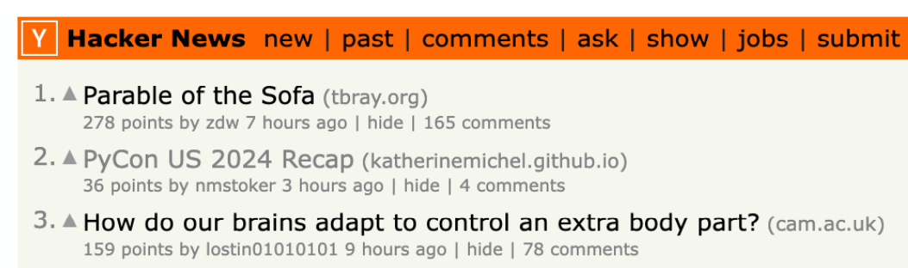
#2 on Hacker News… so close to #1. Beaten out by Tim Bray’s sofa parable, lol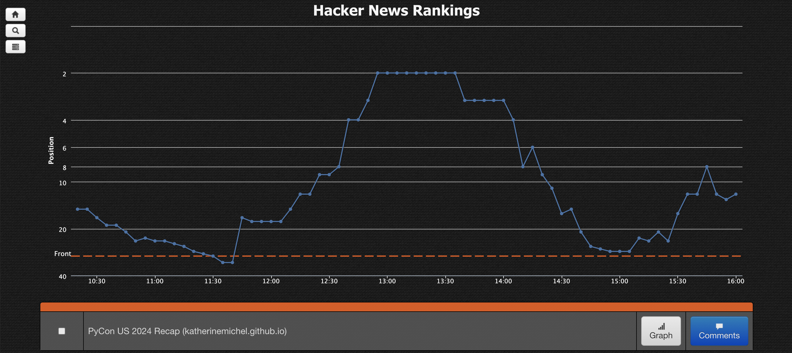
#2 for nearly an hour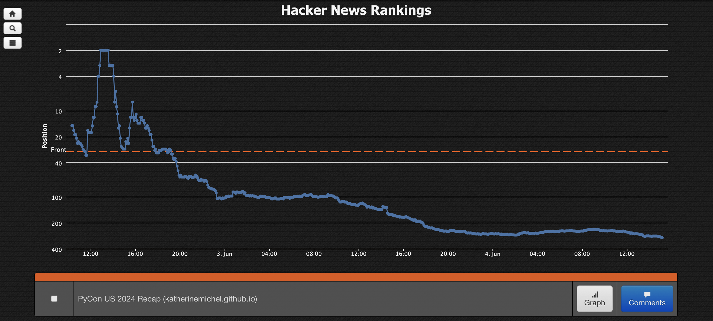
On the “front page” for about 12 hoursWhile the recaps I have written of smaller Python/Django conferences have been widely shared in their own right, I believe that the universal appeal of PyCon US drove the massive popularity of this post.
The new Python Release Manager Hugo van Kemenade whom I had the pleasure of meeting at the conference included my recap as the must read recap in his conference recap roundup.
Validation of my work among the world’s leading Python practitioners and global community means a lot to me.
It was also featured in Django News Newsletter and pip Trends Newsletter.
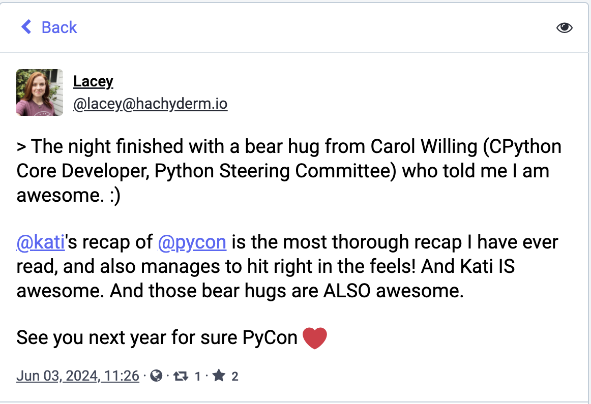
Thank you to the incredible Lacey for this sweet kudo! Can’t wait to see you. :)I am thrilled to know that my recap generated interest in the content and will have increased the number of attendees.
DFW Pythoneers¶
After months of good intentions, I finally committed to attending DFW Pythoneers meetup. It was a great time! I got to see Kevin Horn for the third time in two months and Broadus Jones for the second time in two months. :)
I really enjoyed Jim Vogel’s talk about Pydantic, MongoDB, Beanie, and FastAPI.
Summer Fun for My Nieces¶
In keeping with my plan to do more random, fun things for my nieces, I asked my sister what I could buy them for summer.
Based on her suggestion, I bought them:
Four X-Shot fast-fill water blasters
24 reusable, magnetic, fast-fill water balloons
Innovation Week Global Hackathon¶
It was an amazing Innovation Week at JPMorganChase. I attended presentations Monday, Tuesday, and Wednesday, then finished the week off by participating in the Global Hackathon for the second year in a row.
My first project fell through. Feeling disheartened, Wednesday night, I looked through the projects again and saw a new one that was highly relevant to my work in the Databases Department. I reached out to the team and joined. It felt meant to be. My team was inspiring! I learned a lot and made some new friends.
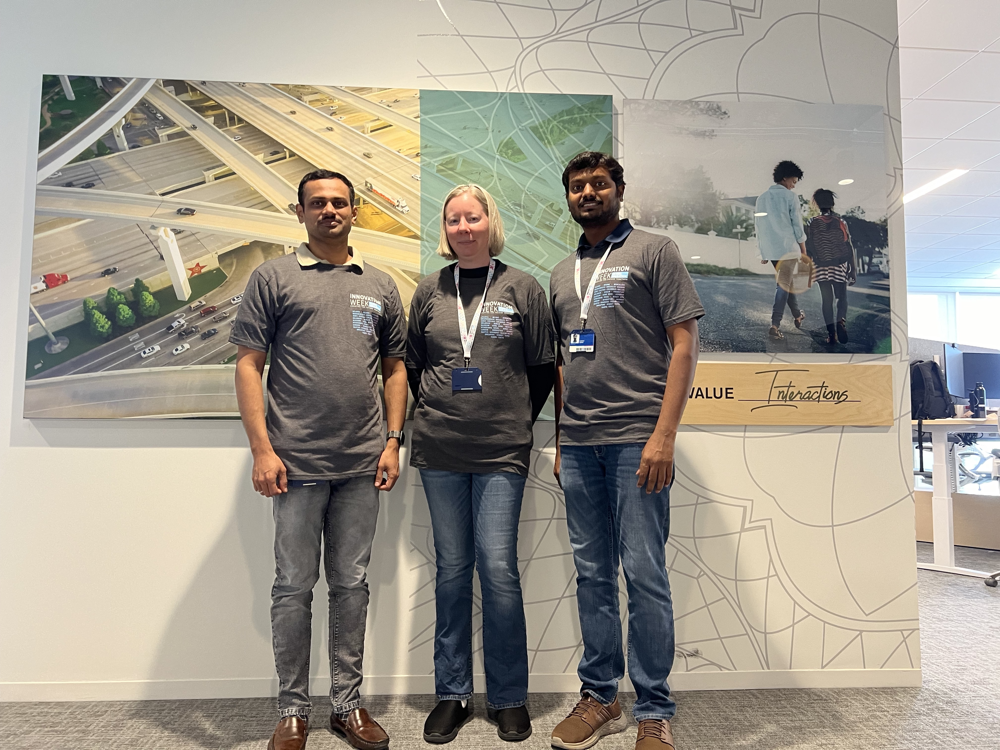
Here I am with my Plano-based hackathon teammates.July¶
Wellness Screening¶
At work, we can complete activities to earn money for an MRA (Medical Reimbursement Account) to save money on healthcare. One of the activities is a wellness screening. During the screening, your blood pressure and body mass index (BMI) are calculated, and a fingerstick is used to calculate your blood sugar, cholesterol and triglycerides.
I had my first wellness screening in November, 2023. I found out that both my good cholesterol and bad cholesterol were high.
I made a few changes in my diet. By my second wellness screening in early July, my bad cholesterol had gone down 22 points. More to come.
Parting Thoughts¶
Thank you to each and everyone one of you, and there are many, who made my year special.
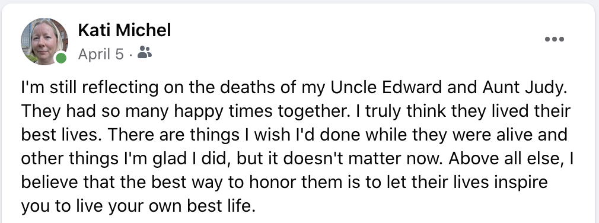
These are the “good old days.” Live your best life.
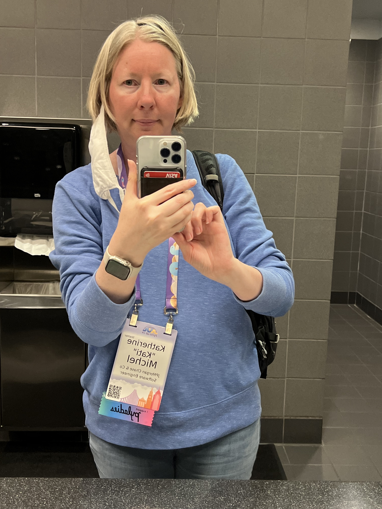
Me at PyCon USSnapshots Throughout The Year¶
Arbor Hills¶
Chinese New Year¶
JPMorganChase Eclipse Watch Party¶
Tanganyka Wildlife Park¶
 Mom turning the tables on me at Tanganyka
Mom turning the tables on me at Tanganyka